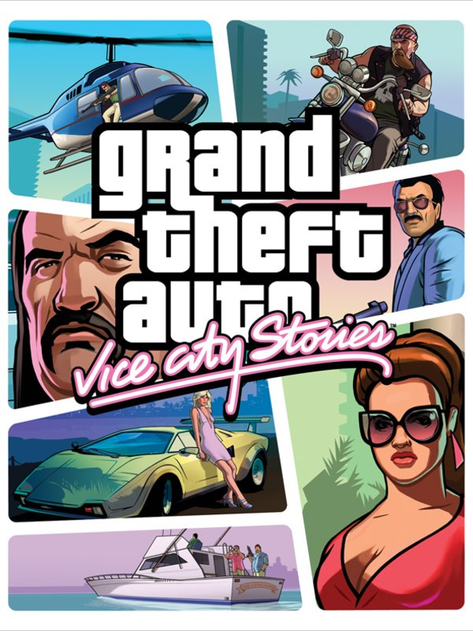

How to enter
Enter the combo during play, without pausing.
Some cheats, like the pedestrian ones, cannot be turned off. Save first.

Enter the combo during play, without pausing.
Some cheats, like the pedestrian ones, cannot be turned off. Save first.
Codes last checked against sources on .
Wrong or missing code? Use Report on the cheat, open an issue or send a pull request on GitHub. Each game is one JSON file.